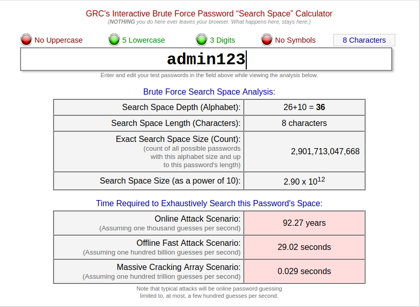
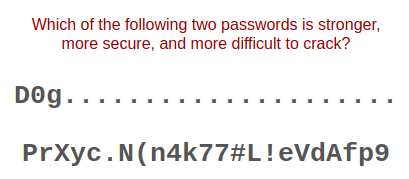

Every password you use can be thought of as a needle hiding in a haystack. After all searches of common passwords and dictionaries have failed, an attacker must resort to a “brute force” search – ultimately trying every possible combination of letters, numbers and then symbols until the combination you chose, is discovered.
Since it could be easily confused for one, it is very important for you to understand what it is, and what it isn't: The #1 most commonly used password is “123456”, and the 4th most common is “Password.” So any password attacker and cracker would try those two passwords immediately. Yet the Search Space Calculator above shows the time to search for those two passwords online (assuming a very fast online rate of 1,000 guesses per second) as 18.52 minutes and 17.33 centuries respectively! If “123456” is the first password that's guessed, that wouldn't take 18.52 minutes. And no password cracker would wait 17.33 centuries before checking to see whether “Password” is the magic phrase.
The main concept can be understood by answering this question:
You probably know this is a trick question, but the answer is: Despite the fact that the first password is HUGELY easier to use and more memorable, it is also the stronger of the two! In fact, since it is one character longer and contains uppercase, lowercase, a number and special characters, that first password would take an attacker approximately 95 times longer to find by searching than the second impossible-to-remember-or-type password! ENTROPY: If you are mathematically inclined, or if you have some security knowledge and training, you may be familiar with the idea of the “entropy” or the randomness and unpredictability of data. If so, you'll have noticed that the first, stronger password has much less entropy than the second (weaker) password. Virtually everyone has always believed or been told that passwords derived their strength from having “high entropy”. But as we see now, when the only available attack is guessing, that long-standing common wisdom is not correct!
The password doesn't need to have “complex length”, because “simple length” is just as unknown to the attacker and must be searched for, just the same. “Simple length”, which is easily created by padding an easily memorized password with equally easy to remember (and enter) padding creates unbreakable passwords that are also easy to use. And note that simple padding also defeats all dictionary lookups, since even the otherwise weak phrase “Password”, once it is padded with additional characters of any sort, will not match a standard password guess of just “Password.”
The example with “D0g.....................” should not be taken literally because if everyone began padding their passwords with simple dots, attackers would soon start adding dots to their guesses to bypass the need for full searching through unknown padding. Instead, YOU should invent your own personal padding policy. You could put some padding in front, and/or interspersed through the phrase, and/or add some more to the end. You could put some characters at the beginning, padding in the middle, and more characters at the end. And also mix-up the padding characters by using simple memorable character pictures like “<->” or “[*]” or “^-^” . . . but do invent your own! If you make the result long and memorable, you'll have super-strong passwords that are also easy to use!